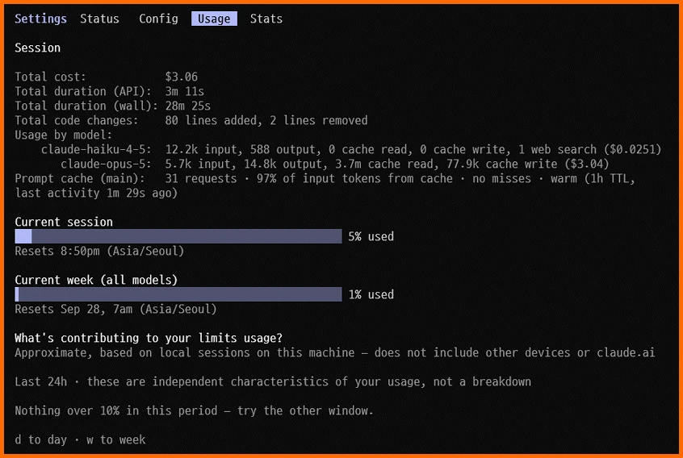

1. 분모가 없는 계기판
오늘 Claude Code의 사용량 화면을 열었다. 이번 세션에 쓴 토큰이 모델별로 나온다. 입력.. 출력.. 캐시 읽기.. 캐시 쓰기가 백 단위까지 찍히고 API 요금으로 환산한 금액도 3.06달러로 나온다. 세는 쪽은 이만큼 자세하다.

그런데 한도는 다르게 나온다. 현재 세션 5퍼센트.. 이번 주 1퍼센트. 무엇의 1퍼센트인지는 어디에도 없다. 주간 한도가 토큰으로 얼마인지.. 지난주와 같은 크기인지 이용자는 알 수 없다. 아래쪽 기여 항목에는 이 화면이 이 컴퓨터의 로컬 세션만 보고 낸 근사치라는 문구가 붙어 있다.
토큰 한 개 단위까지 세어 보여 주는 화면이 정작 이용자가 멈추는 선은 분모 없이 보여 준다. 이 글은 그 빠진 분모에서 출발한다.
2. 토요일 저녁부터 월요일 새벽까지
지난주에 한 일은 많지 않았다. 그런데 토요일 저녁에 주간 한도가 찼고 일요일 하루를 통째로 넘겨 월요일 새벽까지 서비스를 아예 쓸 수 없었다. 소모가 어디서 불어났는지는 알 수 없다. 확인할 수단이 없기 때문이다.
한도가 풀린 오늘은 토큰이 헛되이 쓰이는 현장을 하나 관측했다. 지난주 사태와는 별개의 사례이다. 게시글 파일명의 잘못된 스탬프 세 개를 고치는 단순한 작업이었다. 에이전트는 본문이 바뀌지 않았는지 확인한다며.. 글 여섯 편의 변경 줄을 문단째 전부 출력했다. 차이가 0줄인지 세는 한 줄 명령이면 같은 결과가 나왔다. 같은 확인을 두 번 돌렸고 막힐 것이 뻔한 명령을 돌렸다가 다시 짰다. 결과는 같은데 소모만 몇 배로 늘어나는 동작이다.
이런 동작을 눈앞에서 보면 지난주에도 같은 일이 있었는지 의심이 생긴다. 그러나 의심을 확인할 방법이 없다. 요청 하나가 토큰을 얼마나 썼는지는 볼 수 있어도 그것이 한도의 몇 분의 몇인지는 볼 수 없다.
3. 2026년의 항의와 대응
이런 경험은 나 혼자의 것이 아니었다. 1월 초에 사용자들이 예고 없이 한도에 걸린다고 항의했다. 앤트로픽은 연말에 준 보너스 한도가 끝나서 그렇게 느껴진 것이라고 해명했다.
3월 말에는 앤트로픽이 사용자들이 예상보다 훨씬 빨리 한도에 도달하고 있다고 인정했다. 월요일에 한도가 차고 토요일에 풀려서 한 달 중 12일만 쓴다는 증언이 보도에 실렸다. 앤트로픽이 밝힌 원인은 제품 쪽 문제 세 건이었다. 3월 4일에 추론 노력 기본값을 바꿨다가 4월 7일에 되돌렸다. 3월 26일에 생긴 문맥 관리 버그로 프롬프트 캐시가 반복해서 빗나갔고 4월 10일에 고쳤다. 4월 16일에 시스템 프롬프트를 장황하게 바꿨다가 4월 20일에 되돌렸다. 5월 6일에는 5시간 한도를 두 배로 늘렸다.
이 흐름에서 확인되는 사실은 두 가지이다. 첫째로 이용자의 소모량은 이용자가 무엇을 했는지와 상관없이.. 제공자의 설정과 결함에 따라 불어났다. 둘째로 그 사실은 제공자가 인정했기 때문에 드러났다. 이용자 쪽에서 스스로 확인할 수단은 없었다. 일부러 소모를 늘렸다는 증거는 찾지 못했다. 문제는 일부러 한 것인지 아닌지를 이용자가 가릴 수 없는 구조 자체이다.
4. 계량이 파는 쪽에 쥐여 있다
AI 구독의 계량은 세 겹으로 제공자에게 쥐여 있다. 계량기가 제공자의 서버에 있어 이용자는 결과값만 받는다. 단위도 제공자가 정한다. 토큰은 토크나이저가 글을 자르는 방식이므로.. 토크나이저를 바꾸면 같은 글이 다른 수로 세진다. 소모량도 제공자가 정한다. 추론 노력 기본값과 시스템 프롬프트 길이가 바뀌면 같은 요청이 더 많은 토큰을 쓴다.
전기 계량기는 이용자의 집에 달려 있고 킬로와트시는 물리 단위라서 누가 재도 값이 같다. AI 서비스의 계량은 계량기와 단위와 소모량을 모두 파는 쪽이 정한다.
5. 가격과 계량이 섞여 있다
수도와 가스도 단위량의 가격은 바뀐다. 그러나 사용량을 재는 방법으로는 장난을 칠 수 없게 되어 있다. 단가는 공개적으로 바꾸고 세제곱미터를 재는 방법은 법이 고정한다. 그래서 요금이 오르면 이용자는 얼마나 올랐는지 정확히 안다.
AI 구독은 가격과 계량이 섞여 있다. 월 요금을 그대로 두고 한도의 분모나 토크나이저나 기본 추론량을 바꾸면 실질 단가가 오른다. 이용자에게는 가격 인상으로 보이지 않는다. 계량 방법을 바꾸는 일이 숨은 가격 인상 수단이 된다.
6. 필수재가 되어 가는 AI 서비스
AI 서비스는 이미 골라 쓰는 도구의 자리를 벗어나고 있다. 코드를 짜고 글을 교정하고 자료를 찾고 일정과 위치를 기록하는 일이 AI 서비스를 거친다. 서비스가 멈추면 그 위에 올린 작업 전체가 멈춘다. 토요일 저녁부터 월요일 새벽까지 겪은 일이 이것이다. 한도가 찬 순간 도구 하나가 빠진 것이 아니라 일하는 방식 전체가 정지했다.
수도나 전기가 끊기면 생활이 멈추듯이 AI 서비스가 끊기면 일이 멈추는 사람이 늘고 있다. 필수재로 가는 서비스의 계량을 제공자의 블랙박스에 두는 것은 받아들일 수 없다.
7. 다른 필수재는 이렇게 한다
돈을 받고 양을 파는 거래에서 계량을 파는 쪽이 혼자 쥐지 못하게 하는 제도는 이미 있다. 전기·수도·가스 계량기와 주유기는 국가 검정을 통과해야 쓸 수 있다. 한국에서는 「계량에 관한 법률」이 이 일을 맡고 어기면 벌금과 판매 중지로 제재한다.
전기사업은 체약강제가 걸린 사업이다. 전기판매사업자는 정당한 사유 없이 공급을 거부할 수 없다. 필수재를 파는 쪽에는 서비스 거부권이 없다.
AI 서비스는 셋 모두에서 벗어나 있다. 계량기는 검정받지 않는다. 가격과 계량은 섞여 있다. 한도가 차면 제공자가 서비스를 멈춘다.
8. 바뀌지 않는 과금기준
AI 서비스를 파는 조건으로 네 가지를 명시해야 한다. 첫째로 과금기준을 바꾸지 않는다. 단가는 공개적으로 바꿀 수 있어도 사용량을 재는 방법은 고정하고.. 토크나이저나 기본 설정을 바꾸면 이전 기준으로 환산한 값을 함께 보여 준다. 둘째로 입력·출력·캐시 토큰을 요청 단위로 이용자에게 준다. 셋째로 한도의 분모를 절대량으로 공개하고 바꿀 때는 미리 알린다. 넷째로 제3자가 계량을 검정하고 제공자의 결함으로 불어난 소모는 되돌려 준다.
기준이 불변이어야 이용자가 같은 작업의 소모를 주마다 비교할 수 있다. 비교가 돼야 계량을 검증할 수 있다. 기준이 움직이면 계측값을 공개해도 비교할 근거가 없다.
이것은 AI 서비스를 특별하게 다루자는 요구가 아니다. 수도와 전기와 가스에 이미 적용하는 원칙을 AI 서비스에도 적용하자는 요구이다. AI 서비스가 수도나 전기처럼 필수가 된다면 계량 원칙도 수도나 전기와 같아야 한다.